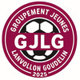

Tactique Foot à 8Formation de ton équipe (les joueurs se placent selon leur poste G/D/M/A) :
Enchaîne plusieurs exercices avec leurs durées pour une séance complète.
Choisis un objet, puis touche le terrain pour le poser. La 🧽 Gomme l'efface.
Exercices retirés de ta liste. Touche ➕ pour les remettre.
— Outils de base —
✋ Déplacer : pose le doigt sur un joueur ou le ballon et glisse-le.
➤ Flèche / ⇢ Course / ⤳ Passe : touche un point puis glisse pour tracer une flèche.
🧽 Gomme : touche une flèche, un adversaire ou un objet pour l'effacer.
🔴 Adversaire : touche le terrain pour poser un adversaire.
🛒 Matériel : plots, cerceaux, échelles, mini-buts, zones (ajustables par les coins)…
📋 Formation : place automatiquement les 8 joueurs (5 systèmes).
— Entraînements et séances —
🏃 Entraînement : 70 exercices animés, classés par catégorie (échauffement, conduite, passe, tir, défense, attaque, coups de pied arrêtés, collectif, gardien) et par niveau (🟢 facile / 🟡 moyen / 🔴 difficile).
📘 Programme FFF U10-U11 : dans 🏃 Entraînement, choisis « Programme FFF U10-U11 ». Les séances sont rangées par thème (ex. « Créer et utiliser des espaces »). Chaque atelier a sa fiche FFF et son animation ; ▶ Dérouler lance toute la séance avec le chrono, 📋 la copie dans Mes séances.
📚 Séance : empile plusieurs ateliers pour une séance complète avec durée. Tu peux la sauvegarder, puis la dérouler avec un panneau flottant qui compte le temps et passe automatiquement à l'atelier suivant.
— Animation —
Ajoute des étapes (➕), déplace les joueurs et adversaires dans chaque étape, puis ▶ Animer. L'appli détecte automatiquement les actions (passe, tir, course) et affiche une légende. Bouton vitesse pour ralentir (🐢 → 🏃).
💬 Note : ajoute un commentaire personnalisé à une étape (« Lucas passe à Théo »). Il s'affiche pendant l'animation à la place de la légende automatique.
— Sauvegarde et partage —
💾 Enregistrer / 📂 Ouvrir : sauvegarde tes situations (formations ou animations) dans le navigateur. Export en fichier pour partager.
📷 Image : exporte le terrain en PNG haute résolution (idéal pour envoyer par WhatsApp).
🎨 Style : cycle entre pelouse rayée, vert uni, tableau noir et tableau bleu.
— Outils annexes —
👥 Mon équipe : saisis tes joueurs et affiche leurs prénoms à la place des numéros.
— Affichage —
⛶ Plein écran : masque les barres pour utiliser tout l'écran.
🆕 Vider : efface tout le terrain pour repartir d'une page blanche.
© 2025 Rouzeval Mickaël — Tous droits réservés